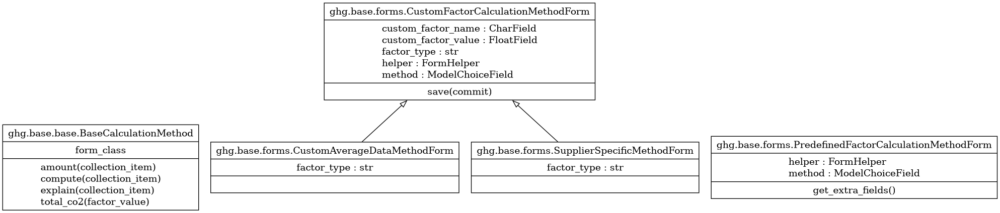

Common¶
{kind=link}
Generic calculation implementations¶
- class greenlang.calculations.ghg.base.base.BaseCalculationMethod[source]¶
This is the base class for all calculation methods. All lot of categories are using this class because they are using a predefined factor. In term of form, the user has to select a GHG emission factor, a GHG emission unit and a amount.
- amount(collection_item)[source]¶
Return the amount value of the related ghg emission factor.
- Parameters:
collection_item – the collection item where the amount value is stored.
- Returns:
The amount value, as float number, of the related ghg emission factor.
- explain(collection_item)[source]¶
Return calculation explanation in human readable format. Basically, it’s displaying the amount, the GHG emission factor value and the total co2 value. It’s also mentionning the data source and the data source year. :param collection_item: the collection item where informations are stored.
- Returns:
Calculation explanation in human readable format.
- property form_class¶
Return form class to use for this calculation method. The form is responsible both of the displayed inputs both of the validation and the saving, if so.
- Returns:
The form class to use for this calculation method.
- total_co2(collection_item)[source]¶
The total co2 value for the given GHG emission factor value.
- Parameters:
collection_item – the collection item where informations are stored.
- Returns:
The total co2 value, as float number, for the given GHG emission factor value. If the GHG emission factor value is a goods or services, the total co2 value is updated with an inflation rate. For the moment, the inflation rate is hard-coded : 7% per year.
Generic forms¶
- class greenlang.calculations.ghg.base.forms.PredefinedFactorCalculationMethodForm[source]¶
This form provides the inputs for category using a predefined factor. It exposes the following fields:
description_user: a description of the item
ghg_factor: the GHG emission factor to use, prefilled with the factors related to selected calculation method
value_float: the amount value
ghg_unit: the GHG emission unit to use, prefilled with the units related to selected GHG emission factor
As hidden fields, the form exposes:
method: the selected GHG emission source computation method
collection: the selected collection
item_type: the selected item type, must be ‘ghg’
ghg_scope: the selected GHG scope
- class greenlang.calculations.ghg.base.forms.CustomFactorCalculationMethodForm[source]¶
CustomFactorCalculationMethodForm